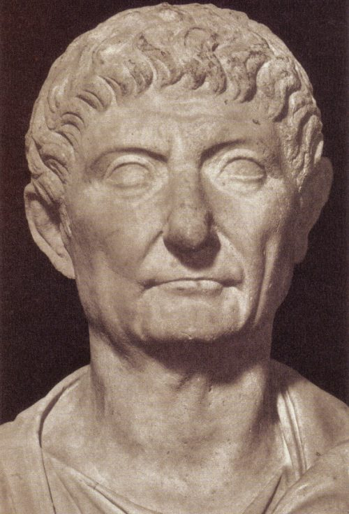

Кризис III века (193‒284 гг. н.э.)
«Золотой век» Рима продлился недолго. Уже в правление Коммода (180‒192 гг.) начались солдатские мятежи и волнения в провинциях. Кризис углубился во время правления династии Северов (193 – 235 гг.) и в особенности после 235 г. Постоянные вторжения варварских племен, узурпации привели к упадку сельского хозяйства, ремесла и торговли, обвальной инфляция. Целые провинции погрузились в пучину крестьянских бунтов и восстаний. Проявились и сепаратистские движения в ряде провинций. При императоре Галлиене (260 – 268 гг.) от империи отпали Галлия, Испания и Британия, образовавшие так называемую Галльскую империю, и Пальмира, правители которой подчинили себе Сирию и Египет. Римляне терпели тяжелые поражения в войне с Персией, в которой установилась власть династии Сасанидов. Провинции опустошались постоянными набегами германцев, сарматов и арабов.
Лишь благодаря деятельности происходивших из Иллирии императоров Клавдия II (268 – 270 гг.), Аврелиана (270 – 275 гг.) и Проба (276 – 282 гг.) удалось восстановить территориальную целостность империи, вернуть под власть Рима все отпавшие провинции, кроме Дакии и приостановить наступление на римскую державу варварских народов.
Доминат (284‒476)
Окончательное преодоление последствий кризиса связано с деятельностью императора Диоклетиана (284‒305 гг.). При нем империя окончательно утратила последние республиканские черты. Власть императора была объявлена неограниченной и божественной, сам император господином и богом (dominus et deus).
Самоуправление городских общин было резко ограничено. Для контроля над империей был создан сложный военно- бюрократический аппарат. Опасность мятежей и узурпаций вынудила Диоклетиана жестко разграничить гражданскую администрацию от армейского командования. Чтобы наместник не располагал слишком большой властью император более чем два раза увеличил количество провинций за счет дробления их на более мелкие территориальные единицы. Италия лишилась своего исключительного положения и была уравнена в правах с прочими землями подвластными императору.
Тетрархи смогли укрепить границы, нанесли ряд поражений Персии, подавили несколько узурпаций. Однако, сложившаяся при Диоклетиане система государственного управления, в значительной степени функционировала лишь благодаря воле своего создателя. После добровольного отречения Диоклетиана от престола его наследники вступили в ожесточенную борьбу за власть. Победителем из нее вышел император Константин I (306 – 337 г.), объединивший под своей властью всю империю. При нем в Риме утверждается новая религия – христианство.
Образование Западной и Восточной Римских империй
В 383 Грациан (375—383), сын императора Валентиниана I, погиб в результате мятежа Магна Максима, который подчинил своей власти западные провинции. В 392 Валентиниан II был убит своим военачальником франком Арбогастом, провозгласившим императором Запада ритора Евгения (392—394), который, будучи язычником, попытался возродить религиозную политику Юлиана Отступника. В 394 Феодосий I разбил Арбогаста и Евгения под Аквилеей и в последний раз восстановил единство Римской державы. Но в январе 395 он скончался, перед смертью разделив государство между двумя сыновьями: старшему Аркадию достался Восток, младшему Гонорию — Запад. Империя окончательно распалась на Западно-римскую и Восточно-римскую (Византийскую).
Распад Западно-римской империи
В марте 455 года Валентиниан III был свергнут сенатором Петронием Максимом. В июне 455 вандалы захватили Рим и подвергли его страшному разгрому. Западно-римской империи был нанесен смертельный удар. Вандалы подчинили себе Сицилию, Сардинию и Корсику. В 457 бургунды заняли бассейн Родана (совр. Роны), создав самостоятельное Бургундское королевство. Под властью Рима к началу 460-х осталась фактически одна Италия. Престол стал игрушкой в руках варварских военачальников, которые по своей воле провозглашали и низвергали императоров. Затянувшейся агонии Западно-римской империи положил конец скир Одоакр: в 476 он сверг последнего западно-римского императора Ромула Августа, отослал знаки высшей власти византийскому императору Зенону и основал на территории Италии собственное варварское королевство.
4 сентября 476 года Западная Римская империя прекратила своё существование. Восточная Римская империя (Византия) просуществовала ещё 10 веков до 1453 года, когда её последний оплот — Константинополь — был захвачен турками и превращён в их столичный Стамбул.